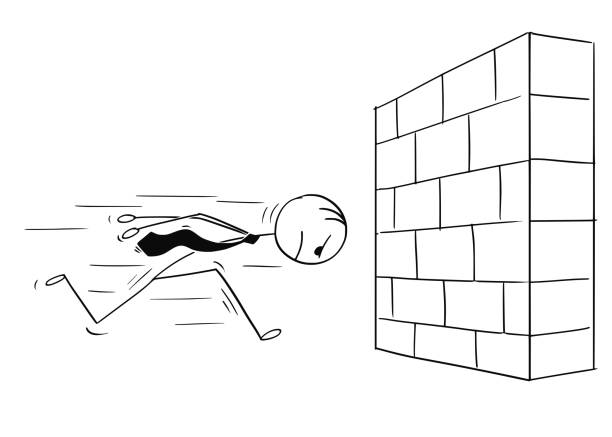

Debugging and Problem Solving in Tech and Beyond
September 24, 2021
Introduction
I'll be the first to admit that over the last two weeks of my learning journey I have managed to find a lot more problems than I have solutions. Javascript so far has been a completely unfamiliar beast which I've been wrestling with and I can confidently say that right now Java is winning. Along the way I have solved some of these problems on my own but more often than not I have studied solutions provided for me in a challenge or researched other people's solutions to try and learn from their answers. In previous learning environments I've been in this practice has sometimes been rather harshly referred to as cheating however here at EDA they're a lot more forward-thinking. Early in Sprint 1, I found this particular excerpt in the handbook:
Researching Google, and other more specific resources, to find out how my problems have been solved in the past has so far been invaluable in my learning and has really helped with getting my head around all of the complex concepts in my studies so far. One particular issue had me stuck in the Javascript Kata challenge Manipulating Objects. It was really early on in the challenge and I couldn't work out how to assign a property to an object and give it a value. First I stepped up out of my chair and left the computer for a while to clear my head. I then went back over my notes I had taken early on which in turn helped jog my memory a bit. I remembered something I had read about using dot notation to change the property of an object and I began just to try something. I had to work out this step:
"terah should have a spouse property with the value of the object adam."
and I wrote down:
"terah.spouse = adam"
and boom it worked! The test passed and I felt great. I pulled that little piece of code out of my brain and I was impressed with myself and elated. From then on the challenge became far more straightforward.

So What Are Some Ways We Can Solve Problems
- Psuedocode: Psuedocode is text written in a document of code that is expressed in plain english as opposed to the language of the document. It cannot be read as code by the computer program so what it says can not alter the code in any way. So it can benefit developers because it can display instructions, useful notes on the code, or outlay exactly what the code is doing, or often in my case what the code is trying to do.
- Trying Something:
This is sometimes referred to as Trial and Error and is a process of applying any knowledge you've gained so far working on the problem and experimenting with different methods to solve it. In this method you need to able to accept that you will make errors before you get results. We'll discuss errors more shortly.
- The Rubber Ducky Method: The rather unusual sounding Rubber Ducky Method has it's origin in a short story published in a educational reference book entitled The Pragmatic Programmer, first published in 1999. The story tells of a programmer who carried round a Rubber Duck and he would debug his code by reading it out to his duck line-by-line. What this method is doing, in an abstract sense, is removing the problem from your own head and thus looking it at it from another angle. When you start to explain your problem and what you're trying to achieve to in this case an inanimate object, or in plain english to someone technically uninitiated, you will very often find yourself realising the solution while you're in the middle of your spiel.
- Reading Error Messages: When you're writing Javascript testing and running your code, and doing it often, is very important. You can easily write a lot of unneccesary code aand have it all not work the way it should if you have made some error in your typing earlier in the file. If running your code does throw up an error or two your Javascript editor should give you detailed error messages. These will explain what the error is, or what the code can't perform, and where to find the error in your file. This blog post here breaks an error message down succinctly and includes some good tips for deciphering them.
- Using the Console.log: During debugging a developer can write code that will output messages and test results to the console.log in DevTools. This along with studying error meesages can aid in regularly testing your code.
- Just Google It: For as long as the internet has been around there's pretty much always been search engines - whether they be Jeeves at Ask.com, AltaVista, Yahoo etc they are all designed to index the web and help users navigate it to retrieve information. Google first launched in 1997, quickly caught on, and now everything is on Google. The solution to nearly every problem you may have can be retrieved in an instant by Google. Every developer uses Google to solve problems and if they tell you they don't they're lying.
- Asking your peers or coaches for help: If you're learning to code as a new skill or you're an established developer working in a team, asking your fellow students, colleagues or superiors for help with a problem can be extremely helpful. I have done this a lot with fellow students in our Slack channel throughout my learning journey. It ties into some aspects of the concept of Rubber Ducking in a way although I'd say it's definitely more helpful because in this case both parties involved are capable of arriving at the solution.
- Reflection: Reflection is an incredibly underrated part of the learning process and it is only more recently starting to be valued for its immense contribution to academic study. Reflecting on, or in other words looking back on, a task or project once it's completed helps reaffirm and solidify concepts you've learned along the way in your mind. Personally I've found writing these blogs at the end of each Sprint an ideal form of Reflection. Each time I've sat down to write and publish these posts I've felt as if doing it has made my knowledge so much clearer and stronger.
So in conclusion, solving problems can be easy and it can also be absolutely excruiciating. But help is always there when you need it.
- Danny